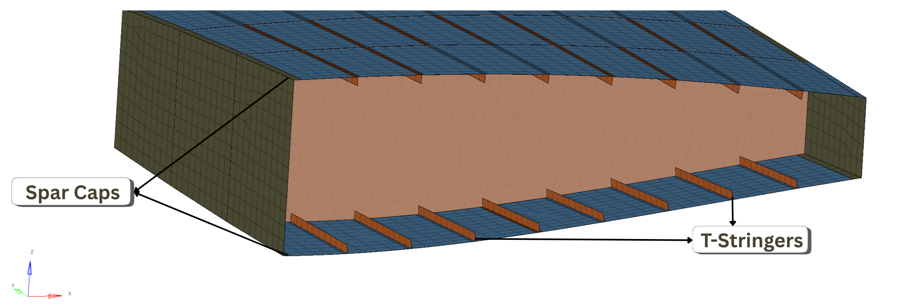

Scalable Bayesian optimization for composite wingboxes
How can we explore a large aircraft design space when every structural analysis is expensive?
I am developing a constrained, multi-center trust-region framework that searches layout and sizing variables together. Sparse Gaussian processes model structural responses, while a physics-informed mass residual model combines an analytical estimate with learned corrections.
The ongoing study compares global, single-center and multi-center strategies under strength and buckling constraints. Shared surrogate models support several local search regions, with layout diversity used to explore distinct configurations. The manuscript and accompanying technical notes are in development; results are not presented here as peer-reviewed findings.

Composite wingbox model from the nested optimization study.
Submitted manuscript
Nested layout & sizing optimization
A surrogate-assisted outer loop explores structural layouts, while an inner gradient-based solver sizes each configuration. Automated Python and HyperMesh TCL modeling connects design choices to finite-element analysis.
Gaussian processesOptiStructPython / TCL
About the submitted work
Nested Surrogate-Based Layout and Size Optimization of Composite Wingbox Structures, N. Ziakos and A. Cini. Submitted to Elsevier / Composite Structures. The study investigates noise-aware Bayesian optimization and a staged multi-run sizing procedure. Publication details will be added after an editorial decision.
Diploma thesis · 2024
Aeroelastic tailoring via tow-steering
Investigating how curved fiber paths can improve the mass and aeroelastic performance of high-aspect-ratio wings. An FE/DLM model of the NASA uCRM-13.5 wing couples structural analysis with MATLAB-based optimization.